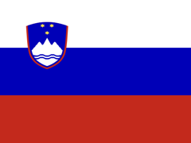

Slovenia's 183-Day Tax Residency Rule
More than 183 days in a calendar year is one route to Slovenian tax residency. Here is exactly how the count works.
Last verified: August 2026
In short: presence of more than 183 days in a calendar year is one route to Slovenian tax residency, so day 184 is the first day that crosses the line. Slovenia counts presence at the end of the day, which means the arrival day counts and the departure day does not. Registered permanent residence, a habitual abode, or your centre of personal and economic interests are separate routes in, and each of them can make you resident from your first day.
- Threshold
- More than 183 days, so day 184
- Counting window
- Calendar year
- A day counts if
- You are in Slovenia at the end of the day
- Other residence tests
- Permanent residence, habitual abode, centre of interests
- Tax year
- Calendar year
- Legal basis
- ZDoh-2, Article 6
The rule
Slovenia treats you as a tax resident if you are present in the country for a total of more than 183 days at any time in the tax year. Three points decide most real cases:
- The threshold is exclusive. The law says more than 183 days, not 183 or more, so a year with exactly 183 qualifying days does not meet this test. Day 184 is the first day that does.
- The window is the calendar year. The Slovenian tax year runs from 1 January to 31 December, and the count resets on 1 January. It is not a rolling 12-month window, so arriving in early July means this test cannot be met that year at all.
- Residency is backdated. You are treated as a non-resident while the count is running. Once you pass the threshold, the tax authority can determine you to be resident from the day you were first present that year, not from day 184 onward.
How to count it
Slovenia counts the days on which you were present in the country at the end of the day, which is the same as counting the nights you spent there.
- List every Slovenia trip with its arrival and departure dates.
- Count the arrival day and every full day of the stay. Do not count the departure day.
- Leave out days spent entirely outside Slovenia, and days when you were only in transit through the country.
- Add the stays together across a single calendar year. They do not need to be consecutive.
- If the year total passes 183, the day-count test is met.
Example. You arrive on 1 March and leave on 1 September, then return on 1 November and leave on 15 December.
The first stay counts 1 March to 31 August, which is 184 days. The threshold is already passed during that stay, on 31 August. The second stay adds 44 more days, but it changes nothing: the test was met the moment the total went past 183, and residency is then backdated to 1 March.
Beyond the day count
The day count is one route in, and it is the only one a calendar can answer. Slovenian law treats all of its residency criteria as equal alternatives, so meeting any single one makes you a resident. You can be resident from your first day of the year through officially registered permanent residence in Slovenia, through a habitual abode there, or through having your centre of personal and economic interests in the country. Slovenian public servants posted abroad and Members of the European Parliament have their own criteria. Staying under the line therefore does not make you a non-resident; it only means this particular test was not met. If another country also claims you, a double-tax treaty decides residency through tie-breaker rules such as permanent home and centre of vital interests, and Slovenian law gives that treaty result priority.
AtlasDays tracks Slovenia's 183-day rule automatically
Log your trips once. The Slovenia Tax Residency tracker counts the calendar year for you on the same end-of-day basis Slovenia uses, privately on your iPhone, and warns you before you reach day 184.
Get AtlasDaysFAQ
How many days can you stay in Slovenia without becoming a tax resident?
Up to 183 days in a calendar year under this test. Day 184 is the first day that crosses the line, because the law says more than 183 days rather than 183 or more.
Does the day you leave Slovenia count?
No. Slovenia counts the days you were present at the end of the day, so the arrival day counts and the departure day does not. Days spent only in transit do not count either.
If you pass 183 days, when does residency start?
Not on the day you crossed the line. The tax authority can determine you to be resident from the day you were first present in Slovenia that year, so the status is backdated to the start of your stay.
About this article: AtlasDays provides general information, not legal, tax, or immigration advice. Rules change and outcomes depend on your circumstances, so never rely on it alone: check the linked official source or ask a qualified professional.